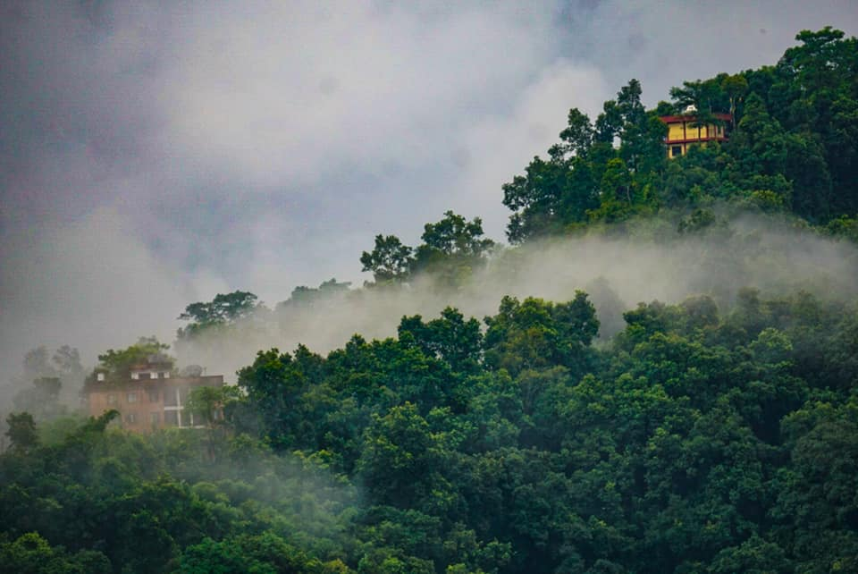
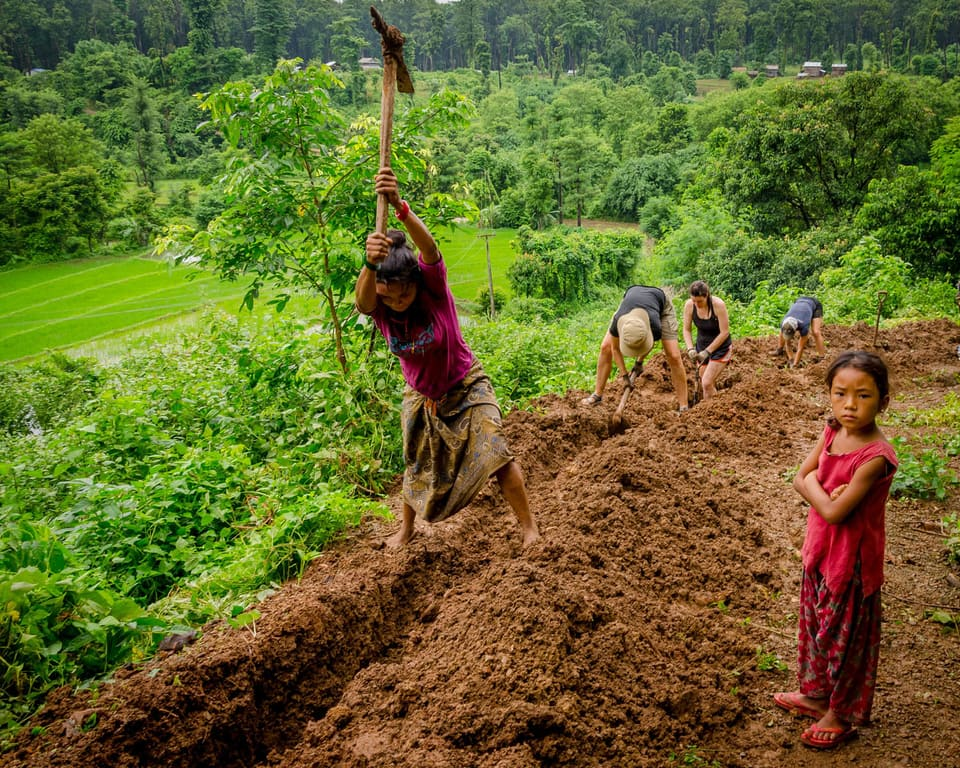
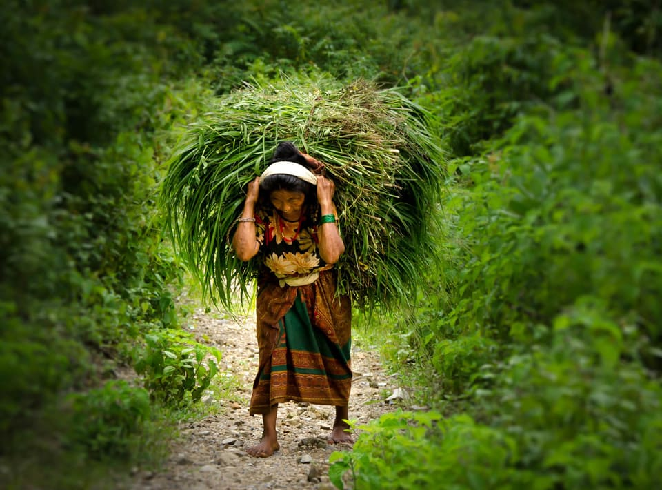

02 — Story
Why we started
From earthquake relief in 2015 to a registered Canadian non-profit in 2019.

2015
Earthquake relief, before there was an organisation
Our founder Maury Mason had been helping the community of Pachabhaiya — a village 200 kilometres west of Kathmandu, near the city of Pokhara — since 2015.
Those early contributions helped people recover from the earthquake damage and the economic hardship that followed.
Homes first, then the paths between them
The first projects rebuilt and repaired damaged homes. From there the work expanded into village infrastructure: pathways, stairs, and connecting homes to water and hydro.

2019
Incorporated in Canada
In May 2019, together with Robbie Prokop, we incorporated as a Canadian non-profit organisation. The operating principle did not change: community leaders bring us the project, and we fund the materials and the local labour that builds it.

2020
A wider base, more work
In 2020 Lilly Mason came on board and helped expand our fundraising base, which has enabled us to take on considerably more projects — including the community centre now underway.
{kind=link}
{kind=link}
{kind=link}
{kind=link}
{kind=link}
{kind=link}
{kind=link}
{kind=link}
{kind=link}